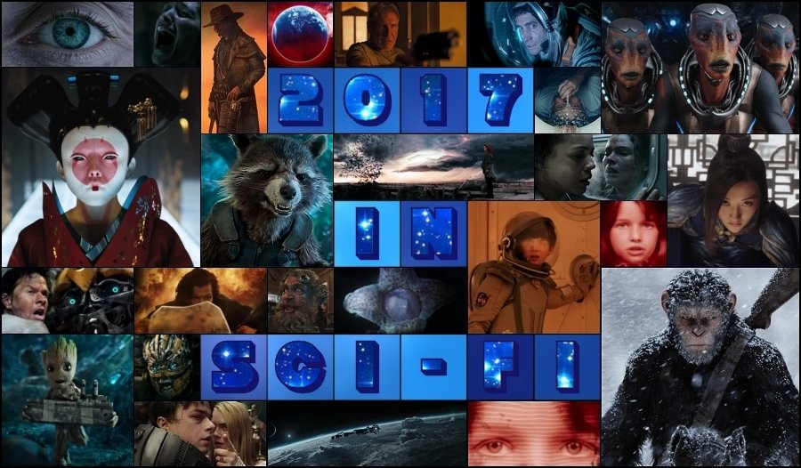

It seems that the science fiction genre has never had it so good. Herein are some of the most hotly anticipated sci-fi films of this year lined up for your perusal in the order of their release dates. Naturally, some of this year’s releases may yet turn out to be just damp squibs that will sparkle briefly before fizzling away, but otherwise everything indicates that 2017 will be an exceptionally good year for science fiction cinema.
This romantic science fiction film, directed by Charlie McDowell from a screenplay written by himself and Justin Lader, stars Rooney Mara, Jason Segel, Robert Redford, Jesse Plemons, Riley Keough and Ron Canada. The story revolves around the son (Jason Segel) of the scientist (Robert Redford) made famous by the discovery that the existence of the afterlife can be scientifically proven, who falls in love with a woman (Rooney Mara) with a tragic past. The film, shot on locations in Newport, Rhode Island, had its world premiere at the Sundance Film Festival on 20th January 2017 and will be released on Netflix on 31st March 2017.
This science fiction horror film, which is a sequel to Resident Evil: Retribution and the sixth and final instalment in the Resident Evil film series that is very loosely based on the survival horror video game franchise Resident Evil by Capcom, was written and directed by Paul W. S. Anderson and stars Milla Jovovich, Ali Larter, Shawn Roberts, Ruby Rose, Eoin Macken, William Levy and Iain Glen. Picking up 3 weeks after the events of the previous movie, humanity is on its last legs after Alice and her friends were betrayed by Albert Wesker, who readies the entire forces of Umbrella Corporation for one final, decisive assault against the apocalypse survivors.
One of the astronauts on a Mars mission discovers that she brought with her to the Mars habitat an unexpected secret cargo – a child she is pregnant with. The boy, after he is born, becomes in effect the first Marian, as he spends his whole childhood and most of his teen years on the desolate, arid, airless Red Planet, which he nonetheless calls his home. When he is, at 16, given a chance to travel to the Earth to meet the girl whom he so far known only from an online chat, a whole new, unexplored world opens up for him. This is the premise of the romantic science fiction film, directed by Peter Chelsom and staring Asa Butterfield and Britt Robertson in the main roles.
More ‘history’ than ‘science’ fiction, this epic fantasy movie centres on William Garin (Matt Damon), Pero Tovar (Pedro Pascal) and three other survivors from a European mercenary unit, who, after being pursued by Khitan bandits, find refuge in a cave where they are attacked by a shadowy monster, leaving only William and Pero alive, the former having hacked off the monster’s hand. The next day, the two stumble upon the Great Wall of China and are taken prisoner by Chinese soldiers led by General Shao (Zhang Hanyu), Commander Lin Mae (Jing Tian) and Strategist Wang (Andy Lau) who tell them that a monster attack which happens every 60 years is imminent.
A group of young, gifted students invents a wireless neural network, connected via a quantum computer, capable of linking the minds of each and every one of us. They realise that quantum theory can be used to transfer motor skills from one brain to another and release this technology as shareware, believing it to be a first step towards a new equality and intellectual freedom. But they soon discover that they are part of a much greater game as dark forces emerge and try to subvert this technology into a means of sinister mass-control. The film, starring among others Tom Payne as Jaxon, Melia Kreiling as En.o.ch and Sam Neill as Kreutz, was directed by Andrew Goth.
The script for this American-British sci-fi thriller film was written by the successful tandem of screenwriters Paul Wernick & Rhett Reese (Zombieland, Deadpool), directed by Daniel Espinosa and stars Jake Gyllenhaal, Rebecca Ferguson and Ryan Reynolds in the main roles as three astronauts from the six-member crew of the International Space Station, who are tasked with studying a sample from Mars that may be the first proof of extraterrestrial life, but which proves to be much more intelligent, and dangerous, than anticipated. Hiroyuki Sanada now a regular of sci-fi shows, also appears in the movie produced by Skydance Media and distributed by Columbia.
This live-action adaptation of Masamune Shirow’s legendary manga and anime series has been long time coming and all fans of the original Japanese show are waiting with bated breath whether the Hollywood interpretation of this coveted science fiction franchise will meet their high expectations. The film director Rupert Sanders’s casting of Scarlett Johansson in the lead role has caused quite a bit of controversy, as the main protagonist of the original franchise, cybernetically augmented squad leader of Public Security Section 9, Major Motoko Kusanagi, is Japanese. Will Rupert Sanders’s take on this cult classic live up to the high hype? Only time will tell.
The eagerly awaited sequel to 2014’s Guardians of the Galaxy doesn’t need any extra introduction. The film, written and directed by James Gunn features all the old, well-loved characters: Star-Lord, Gamora, Rocket, Groot, Drax and Yondu (portrayed, respectively, by: Chris Pratt, Zoe Saldana, Bradley Cooper, Vin Diesel, Dave Bautista and Michael Rooker. In addition, Karen Gillan repeats her role as Nebula, adopted sister of Gamora, and Pom Klementieff joins the ensemble as a new Guardian, Mantis – female character sporting a pair of antennae endowed with empathic powers enabling her to communicate with plant life. What’s not to like?
Another hotly anticipated sequel, Alien: Covenant, despite its title, is in fact a direct sequel to Ridley Scott’s Prometheus, which is itself a prequel to Alien. However, all Alien and Prometheus films take place in the same universe and if anything, Alien: Covenant will only strengthen the link between the two franchises. Indeed, Ridley Scott recently confirmed that he is planning additional two sequels to follow Alien: Covenant before the Prometheus storyline finally links up with the original Alien one’s. Brilliant Michael Fassbender returns in the role of android David, the only surviving member of the doomed Prometheus expedition, as well as a new android model, Walter.
The 5th instalment in the live-action film series and a direct sequel to Transformers: Age of Extinction, this is also the fifth and final film in the franchise to be directed by Michael Bay, with Mark Wahlberg and Stanley Tucci reprising their roles from the previous movie, alongside Josh Duhamel, Tyrese Gibson and John Turturro from the first three films. The producers attracted criticism for an arguably distasteful choice of setting for a particular scene, which took place in Blenheim Palace, Woodstock in England, former home of World War II British Prime Minister Sir Winston Churchill, with the mansion revamped as an Adolf Hitler’s swastika-adorned headquarters.
If the first two films of the rebooted ‘Planet of the Apes’ series are anything to go by, this is going to be a big one. Following the events of the previous film, Dawn of the Planet of the Apes, Caesar and his fledgling civilization of apes get drawn into a full-out war with the humans. After the apes suffer heavy losses, Caesar wrestles with his darker animal instincts as he resolves to avenge his kind. The conflict pits Caesar against the humans’ leader, a ruthless Colonel, in a decisive battle that will determine the fate of both their respective species. Andy Serkis returns in the role of the charismatic leader of the apes Caesar and Woody Harrelson portrays the Colonel.
Another visually-stunning spectacular from the director of ‘The Fifth Element’ Luc Besson, Valerian and the City of a Thousand Planets is based on the French sci-fi comic Valérian and Laureline. The comics series inspiring the film, first published in 1967 with the final issue printed in 2010, was running into twenty-one volumes plus an assortment of short stories, achieving something of a cult status and offering plenty of material for many more movies, so, providing the first film will be well received, Valerian could easily spawn a multi-sequel franchise to rival that of Star Wars. Dane DeHaan and Cara Delevingne star in the main roles as Valerian and Laureline.
Science fantasy rather than science fiction, this yet another eagerly anticipated adaptation is based on the series of well-known novels of the same name by Stephen King. At the same time, the film serves as a quasi-sequel to the last book in the aforementioned series: The Dark Tower VII: The Dark Tower. In the movie, Jake Chambers (Tom Taylor), a young adventure seeker, is spirited away to the Mid-World where he encounters the lone gunslinger Roland Deschain (Idris Elba) who is on a quest to reach the ‘Dark Tower’ situated in the End-World and save the Mid-World from destruction, with a vicious sorcerer Walter Padick (Matthew McConaughey) hot on their trail.
This eagerly awaited sequel to Ridley Scott’s cult 1982’s film Blade Runner is set 30 years after the events of the first film. A new Blade Runner, LAPD Officer K, unearths a secret of potentially grave consequences that leads him on a quest to find Rick Deckard, a former Blade Runner who has been missing for 30 years. The film, written by Hampton Fancher & Michael Green and directed by Denis Villeneuve, will have Harrison Ford reprise his role as Rick Deckard, with Ryan Gosling as Officer K, and Ana de Armas, Sylvia Hoeks, Robin Wright, Mackenzie Davis, Carla Juri, Lennie James, Dave Bautista and Jared Leto in supporting roles.
This action sci-fi film directed by Dean Devlin, who also co-written the script with Paul Guyot, tells the story of a scientist Jake, who goes into space to prevent climate-controlling satellites from creating a storm of epic proportions, while his brother Max discovers a plot to assassinate the president. In the lead roles star Gerard Butler who portrays Jake, Jim Sturgess who plays Jake’s younger brother Max, Alexandra Lara as Ute Fassbinder, Jake’s love interest, Andy García as President Palma, Ed Harris as Secretary Dekkom and Abbie Cornish as Agent Sarah. Actors Adepero Oduye, Amr Waked, Billy Slaughter and Eugenio Derbez also appear.
After a scientific experiment involving the Higgs boson particle goes wrong and causes Earth to disappear, a team of astronauts aboard a space station makes a terrifying discovery, that challenges all they know about the fabric of reality, as they desperately fight for their survival. This is the premise of American science fiction horror film directed by Julius Onah from the screenplay written by Oren Uziel & Doug Jung and produced by J. J. Abrams. The film, which is touted as the third instalment in the Cloverfield franchise, stars Daniel Brühl, Elizabeth Debicki, Gugu Mbatha-Raw, Chris O'Dowd, Zhang Ziyi, David Oyelowo, Aksel Hennie and John Ortiz.
The 2nd film in the newest Star Wars trilogy after Disney’s acquisition of Lucasfilm, The Last Jedi follows on from the events of the previous film Star Wars: The Force Awakens. Directed by Rian Johnson, the movie will see the return of Mark Hamill as Luke Skywalker, a legendary Jedi Master who has been in self-imposed exile on the planet Ahch-To, Carrie Fisher as Leia Organa, his twin sister and a general in the Resistance, Daisy Ridley as Rey, a Force-wielding scavenger, John Boyega as Finn, a defected stormtrooper, Oscar Isaac as Poe Dameron, an X-wing fighter pilot, and Adam Driver as Kylo Ren, Leia’s son seduced by the Dark Side of the Force.
British science fiction mystery film directed by Duncan Jones, who also co-wrote the script with Michael Robert Johnson and Damon Peoples, starring Alexander Skarsgård, Paul Rudd and Justin Theroux in the main roles. The film is set in Berlin, a roiling city of immigrants where East crashes against West, forty years from present, and revolves around Leo Beiler, a mute bartender, who is searching for the love of his life who has mysteriously disappeared. Both the late David Bowie’s talented son’s directorial debut Moon and his second science fiction film Source Code were excellent, so his latest creation too shouldn’t be a disappointment. The film, described by Jones as a “spiritual sequel” to his 2009 film Moon, should see a release sometime in 2017.
The sequel to a 2014 science fiction action film Lucy, about a young woman who, after an accidental exposure to a new powerful drug when she is tricked into working as a drug mule, becomes enhanced with superhuman and supernatural abilities, written and directed by Luc Besson and starring Scarlett Johansson in the titular role, was rumoured for a long time, but EuropaCorp, the film’s producer, recently announced that the sequel is indeed in development. It is unclear though, as yet, at what stage the movie is, or when it will be released.
Back in January 2015, when the Concept Art posted by film director Neill Blomkamp on his Instagram profile raised speculations of the possibility of an Alien sequel being made under his direction, we got so excited, that we have written a special preview Alien: Xeno to celebrate the occasion. The things cooled down a bit since, though. In October 2015 Blomkamp announced that the Alien project was put on hold, pending the outcome of the second film in the Alien prequel sequence, Prometheus’s follow-up Alien: Covenant. In April 2016, Sigourney Weaver said she thought that, despite the hiatus, the proposed fifth Alien film would still go into production, following the completion of Alien: Covenant, due to Ridley Scott’s insistence on the production order, reiterating that she and Blomkamp still hope to finish Ripley’s story in the fifth Alien film. However, in January 2017, when Blomkamp was asked by a fan via his Twitter account about the chances of the Alien 5 happening, he responded by saying that they are "slim". Obviously, “slim chances” don’t mean “no chances” so we just have to cross fingers and wait and see.
Yet another sci-fi movie from Alex Garland, who has so far written scripts for five high-quality science fiction films: 28 Days Later, Sunshine, Never Let Me Go, Dredd and the outstanding Ex Machina which also marked his directorial debut. The film, based on the book of the same name by Jeff VanderMeer, centres on a biologist (Natalie Portman), who is trying to come to terms with the disappearance of her husband in an environmental disaster. Looking for answers, she joins an expedition into the disaster zone, but what she finds there is not quite what she was expecting. Jennifer Jason Leigh, Gina Rodriguez, Tessa Thompson, Oscar Isaac and David Gyasi complete the cast.
BioWare’s critically-acclaimed science fiction video game series, which so far runs into three instalments, with the fourth one, Mass Effect: Andromeda, imminent, doesn’t need an introduction. The series, which is highly regarded for its detailed universe, thorough narrative, professional voice acting, character development and player’s in-game-choice effect on the overall experience, spawned several novels, a multitude of rather good comics (such as Mass Effect: Foundation) and one anime film to date. The live-action film adaptation of the video game is rumoured to be in production at least since May,2010, when Electronic Arts announced that Legendary Pictures and Warner Bros. acquired the rights to a Mass Effect film, that would follow the plot of the original game, and that would be executive produced by BioWare’s Ray Muzyka, Greg Zeschuk and Casey Hudson (however, their involvement in the film adaptation is now highly unlikely, as all three left BioWare to pursue other projects). Alas, there have been no new announcements on the matter since October 2012, when Variety announced that Morgan Davis Foehl would be writing the screenplay for the film adaptation, although according to film producer Avi Arad, the film is still in the works and likely to debut in 2018 or 2019.
While speaking at the 2013 DICE Summit about storytelling in games and movies, film director and producer J. J. Abrams and video game developer Gabe Newell announced that Bad Robot Productions had made a deal with Valve Corporation to produce a live-action film adaptation of either of these two celebrated video games. Unfortunately, as with the above videogame-to-film adaptation, the trace went cold since then, however in an interview with IGN in March 2016 J. J. Abrams insisted that while he has been working on many other projects at the moment, he still plans to direct these movies in the future, with both films in the script-writing stage.
Not to be confused with the above mentioned science fiction thriller Life produced by Skydance Media, Intelligent Life, by Steven Spielberg’s Amblin Entertainment has been in development for a while. The film, based on the original script by Jurassic World director Colin Trevorrow and his collaborator Derek Connolly, focuses on a United Nation employee who, while monitoring outer space, makes contact with a beautiful woman, who may or may not be of extraterrestrial origin. The script to the romantic science fiction film is at the moment being rewritten by Jay Roach, who is also being encouraged by Amblin to take a bigger, perhaps directorial, role once the polishing of the script has been finished.
Even before the World War Z hit the cinemas, back in January 2012 film’s director Marc Forster and distributor Paramount Pictures stated that “they each view World War Z as a trilogy”. Reaffirming this, immediately after the successful opening of World War Z in June 2013, Paramount announced that they were moving ahead with the sequel, further reporting in December 2013, that Juan Antonio Bayona had been selected to direct the film. The commitment to quicken-up the production was further bolstered in May 2014 when Steven Knight was tasked with the writing of the screenplay, and in May 2015, when it was announced that the second World War Z film would be released on 9 June 2017. Unfortunately, the sequel then entered a developmental limbo, with Paramount announcing in January 2016 that film director Bayona is leaving the project due to other commitments, and further reporting in August 2016 that David Fincher had entered negotiations to be the film’s director and that the film was not yet in production.
Only a few of you will likely remember this sci-fi film directed by Gary Nelson, produced by Walt Disney Productions and released in 1979 – the same year as Ridley Scott’s seminal science fiction masterpiece Alien. And no wonder. There is nothing memorable about this dreadful excuse of a film. But it is only ‘after’ you compare these two films side-by-side when it becomes apparent just how revolutionary Alien truly was – and just how bad ‘The Black Hole’ really is. For example, take the humanoid android Ash from the Alien, and compare it to the vacuum-cleaner-resembling robot V.I.N.CENT from The Black Hole – do I need to continue? Plans to remake the film were toyed with at least since November 2009, when Disney revealed that it wants to re-imagine the movie for a new generation of cinemagoers and selected Joseph Kosinski (Tron: Legacy) to direct the film. Later, in April 2013, Jon Spaihts (who wrote the original screenplay to Alien’s prequel, Prometheus), was confirmed as a script writer for the remake. Then, after a three-year hiatus, in 2016, it was announced that the film’s development was put on hold, because Spaihts’s script was considered by Disney “too dark for a Disney movie”, after which Spaiths was quoted to have commented on this thus: “I loved that script, [But] it sits uneasily in Disney’s world as a dark epic, and Disney is a very colorful place.”, before adding: “I sure wrote a heck of a movie and was thrilled to do it. It was very faithful to the original but clever in all the ways that the first film was silly, I hope.” The future of the project remains uncertain at the present.
Already during the early discussions with the film’s director Colin Trevorrow about the future of the >Jurassic World franchise, Steven Spielberg’s, whose production company Amblin Entertainment co-produced the movie, indicated that he was interested in having several, possibly two, more films made. Shortly after the film’s release in June 2015, Chris Pratt and Ty Simpkins confirmed that they are signed on for potential future films, but Trevorrow made clear that he would not be interested in directing another film in the series, reasoning that new directors could bring novel approaches and different qualities to future films (he said that it would be particularly interesting to see what new take on the Jurassic World could bring one of the Spanish horror film directors), however he stated that he will still be involved in the production in some way. In July 2015, Universal announced that the sequel to Jurassic World is underway, that the previous film’s tandem of screenwriters Colin Trevorrow and Derek Connolly will be returning to write the script, that Chris Pratt and Bryce Dallas Howard will reprise their lead roles as Owen Grady, a Velociraptor expert and trainer at Jurassic World, and Claire Dearing, the Jurassic World’s operations manager, respectively, and that the film is scheduled for a 22 June 2018 release (with the UK release date brought forward to 7 June 2018). Hinting at the plot, Trevorrow said that the series “isn’t always going to be limited to theme parks”, further clarifying that the first Jurassic World sequel would not involve “a bunch of dinosaurs chasing people on an island”, before adding: “That’ll get old real fast.”. In January 2016, it was reported that, in accordance with Trevorrow’s wishes, Spanish horror film director Juan Antonio Bayona could be a candidate to helm the film after he left the World War Z sequel (see above), and in April 2016, Bayona was indeed appointed as the film’s director. Later, it has been announced that the production will begin in Hawaii in February 2017, with Hawaii being used as a primary filming location and some shooting also taking place in UK studios. It was also confirmed that the third film in the Jurassic World series is already being planned.
This Chinese sci-fi crime-thriller film directed by Leste Chen stars Huang Bo, Xu Jinglei, Duan Yihong, Yang Zishan and Ann Hsu. Principal photography took place at various locations in Thailand and the film is scheduled for release in China on 28 April 2017. At the time of writing, little is known about the plot and it is unclear when (or indeed whether) the film will be released for western audiences.
The first of now-four sequels to James Cameron’s epic science fiction film Avatar was originally supposed to be released in December 2016, then the release date slipped to December 2017, only to be pushed back yet again to December 2018 (read the full details here). Here’s a hope that the final result will be worth the long wait.
Originally titled ‘The Divergent Series: Allegiant – Part 2’, this, fourth and final instalment in The Divergent Series should have followed the latter half of the Allegiant novel by Veronica Roth. Originally scheduled to be released on 24 March 2017, in December 2015 Lionsgate placed the upcoming reboot of Power Rangers in the Ascendant’s former release slot and pushed the film’s release date back to 9 June 2017. Then, in February 2016, Lionsgate announced that Robert Schwentke would not be returning to direct the final part, and three weeks later confirmed that Lee Toland Krieger would replace him as the director of the film. Furthermore, in July 2016, it was reported that following the poor box office performance of Allegiant, Lionsgate was considering releasing Ascendant as a television pilot film that would wrap up the previous three films’ storylines and kick-start a Divergent spin-off television series. However, Shailene Woodley later said that the fourth film in the series wasn’t finalised yet, and that right now it’s all “a limbo waiting game”…